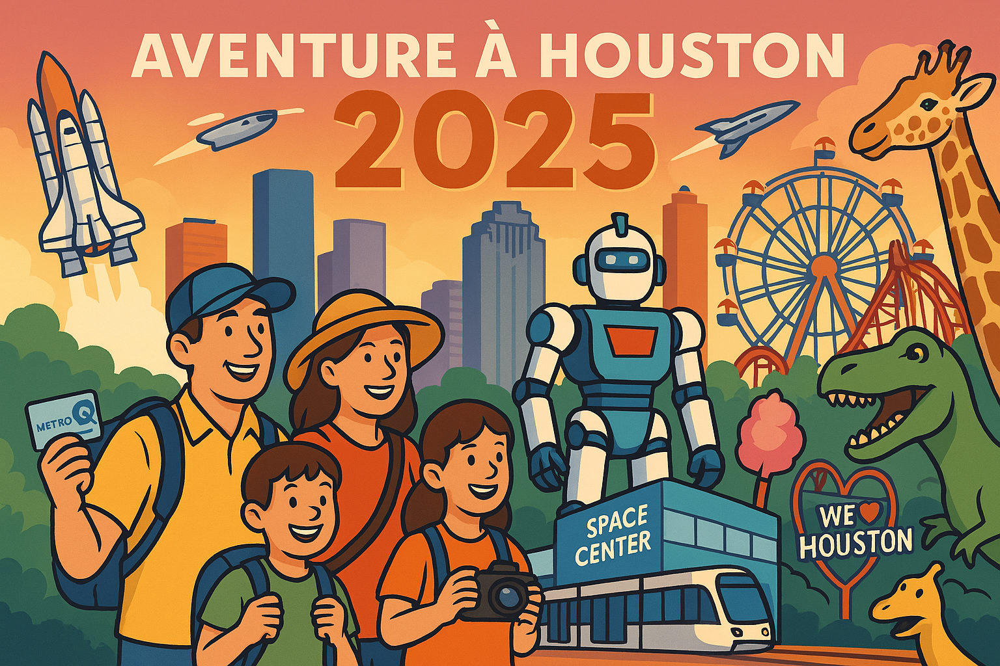

Guide de Voyage Houston 2025

🌟 Bienvenue dans votre guide de voyage pour Houston 2025
Ce guide a été spécialement conçu pour votre séjour à Houston du 14 au 24 avril 2025, incluant votre participation au FIRST Championship. Il combine clarté visuelle, informations essentielles et conseils pratiques pour une expérience optimale.
📋 Sections Principales
01. Introduction et Sommaire
Vue d'ensemble du voyage, dates clés et informations essentielles.
02. Space Center & Kemah Boardwalk
Journée 20 avril: Exploration spatiale et divertissement en bord de mer.
03. Shopping à Katy Mills
Journée 21 avril: Aventure shopping dans le plus grand outlet de Houston.
04. Sécurité et Logistique
Informations pratiques sur les transports, contacts d'urgence et conseils de sécurité.
05. Guide Gastronomique
Recommandations de restaurants par catégorie et conseils culinaires.
06. FIRST Championship
Journées 16-19 avril: Guide complet de l'événement robotique mondial.
07. Museum District
Journée 22 avril: Exploration des musées de renommée mondiale de Houston.
08. Hermann Park et Zoo
Journée 23 avril: Découverte de la faune et de la flore dans un cadre magnifique.
📚 Annexes
A. Cartes et Transport
Plans détaillés, options de transport et itinéraires.
B. Contacts d'Urgence
Liste complète des numéros d'urgence et services médicaux.
C. Comparatif Shopping
Analyse détaillée des centres commerciaux et outlets.
D. Guide Touristanbul
Informations sur l'excursion gratuite à Istanbul lors de votre escale.
E. Guide Local - Manger & Acheter
Découverte des quartiers, spécialités culinaires et boutiques uniques de Houston.
💡 Comment utiliser ce guide
- Navigation: Utilisez les liens hypertextes pour naviguer entre les sections.
- Checklists: Chaque section contient une checklist essentielle à vérifier.
- Alertes: Repérez les symboles ⚠️ pour les informations critiques.
- Conseils familiaux: Les sections 👨👩👧👦 sont spécialement conçues pour les enfants de 10 ans.
Ce guide a été préparé avec soin pour votre famille, en tenant compte de vos préférences pour les transports en commun et les activités adaptées aux enfants de 10 ans.